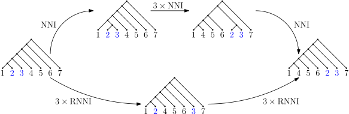
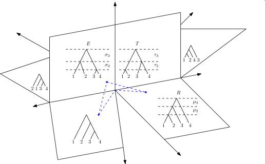

Discrete time trees:
theory and open problems
Alex Gavryushkin
Joint work with:- Chris Whidden, Fred Hutchinson Cancer Research Center, Seattle, WA, USA
- Erick Matsen, FHCRC, U. of Washington, Seattle, WA, USA
- Alexei Drummond, U. of Auckland, NZ
November 15, 2016
(Discrete) Time tree
Sampled ancestor tree

NNI graph

Why is this important?
- Tree search algorithms
- Model testing/selection and other simulation studies
Why is this hard?
Trees are many!

Discrete time tree space
Sampled ancestor tree space

Graph = Metric
Trees at distance 2

Trees at distance 4

Main idea
(my failed proof)
History of the NNI graph
- Over 25 year of work!
- Over 7 erroneous papers published!
What's wrong with the NNI graph?
-
The Split Theorem
-
The merge and sort trick
Merge and sort trick

Merge and sort trick

RNNI is free from all these!
- Split theorem. Tick.
- Merge and sort doesn't work. Tick
-
Efficient polynomial algorithm?

What is an approximate (?) algorithm

$\frac{1}{2} \log_3 \frac{(n-1)!n!}{6^{n-1}} \leq \mathrm{Diam} \leq n^2 - 3n - \frac{5}{8}$
What we've done?
-
Introduced the RNNI graph on ranked trees (to the best of our knowledge)
-
Established basic geometric properties of the graph
-
Designed an efficient approximate algorithm for computing shortest paths
-
Proved that all the fancy NNI methods, e.g. Sleator-Tarjan-Thurston and merge-and-sort argument, don't work
-
Failed to prove that RNNI is NP-hard
What has to be done?
- Is RNNI polynomial? Complexity?
- Split Theorem
- Are these two related?
- ...
What about branch lengths?
Hence, time trees are (more or less) fine
What about sampled ancestor trees?
Looks like a problem[Stadler, JTB 2010] must be cheating then :)
But then we can cheat a bit too!
... and introduce imaginary nodes
References:
- Sleator, Tarjan, and Thurston. Short Encodings of Evolving Structures. (1992)
- Dasgupta, He, Jiang, Li, Tromp, and Zhang. On Computing the Nearest Neighbor Interchange Distance. (1999)
- Stadler. Sampling-through-time in birth–death trees. (2010)
- Gavryushkin and Drummond. The space of ultrametric phylogenetic trees. (2015)
- Gavryushkin, Whidden, and Matsen. The combinatorics of discrete time trees: theory and open problems. (bioRxiv, 2016)